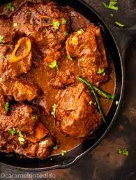
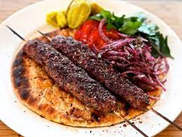

MY FAVOURITE RECIPE
- Biryani
- mutton 
- Kebab 
- BEEF PULAO

I have tasted so many foods-Western, Italian, Indian, and Chinese. But Chicken Biryani is my favourite
Ingredients
3½ cups water 2⅓ cups long-grain Basmati rice 4 Bay leaves ½ cup Warm Milk 1 pinch saffron strands ¼ cup ghee 2 onions thinly sliced 2 green chillies chopped
I recentlty test mutton kharai in charsi tikka resturant
Ingredients
slow-cooking bone-in lamb mutton in a gravy made with onions tomatoes spicesLamb Shish Kebab (or Shish Kabob) is a very popular Turkish / Middle Eastern
dish typically served in restaurants or takeaway kebab shops.

Beef Pulao is a wonderful pulao recipe. This is a famous recipe of Pakistan.
In this recipe rice are cooked mixing with beef which gives
delicious taste and mouthwatering. Beef Pulao is made at mostly every house of Pakistan and India as a routine dish.